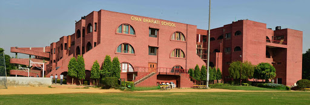

Academic Background

Delhi Technological University (DTU)
Currently pursuing Computer Engineering with a strong emphasis on algorithms, software engineering, web development, and machine learning at one of India’s premier technical universities.
Currently in Final Year
Currently in Final Year

Gyan Bharati School, Saket, New Delhi
Completed senior secondary education with distinction, securing 95.6% in the Science stream (PCM + Computer Science).
Gyan Bharati School, Saket, New Delhi
Achieved 91.6% in Class X board examinations, laying a strong foundation in mathematics and science.